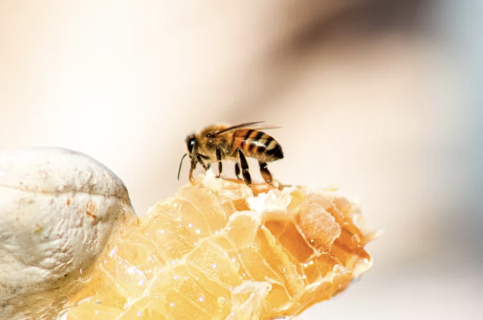

Honey Glazed Roasted Carrots

Description
Whip up a Honey Glazed Roasted Carrots dish by coating baby carrots in honey, butter, and rosemary, then roast for a delectable side.
For a quick sweet treat, make a Honey and Yogurt Parfait - layer yogurt, berries, honey, and granola for a healthy indulgence.
Ingredients
- Baby carrots
- Honey
- Butter
- Rosemary
Steps
- Preheat your oven to 400°F (200°C).
- Wash and dry the baby carrots.
- In a bowl, mix honey, melted butter, and chopped rosemary to create a glaze.
- Toss the carrots in the glaze mixture, ensuring they are evenly coated.
- Spread the coated carrots on a baking sheet in a single layer.
- Roast in the preheated oven for 20-25 minutes or until the carrots caramelize and become tender, stirring once during cooking.
- Remove from the oven, let them cool slightly, and serve. Enjoy your Honey Glazed Roasted Carrots!